Esta é uma experiência para adultos. Para continuar, confirme sua idade.
Terra, Tempo e Talento
Rio Grande do Norte · Brasil · 750ml · 9% volSomos fruto do sol e da brisa tropical.
Da terra que ensina paciência e transforma resiliência em sabor.
No caju, enxergamos mais do que um fruto: vemos origem, cultura e potência.
Vemos o Nordeste que inova, cria e prospera. Unimos ciência e tradição, campo e arte,
para transformar o que antes era desperdíçio em um símbolo de orgulho, sofisticação e impacto positivo.
Em cada garrafa, há tempo e talento. Há o trabalho de quem cultiva, pesquisa e sonha.
Há o brilho dourado do sol e o frescor do caju.
AKAÎU é mais que um espumante, é uma celebração que nasce do povo e volta para o povo.
Um brinde à terra, ao tempo e ao talento de quem acredita que sofisticação também pode ser partilha.
Porque da terra fértil, o tempo colhe. E com talento, brindamos!
AKAÎU tem alma brasileira e espírito elegante! Produzida a partir do pedúnculo do caju, fruta nativa brasileira, esta bebida segue o Método Tradicional de elaboração de espumante (champenoise), com uma segunda fermentação na própria garrafa, permanecendo Sur Lie Nature, sem adição de licor de expedição.
É um produto para fazer parte de grandes momentos de celebração. É uma marca autêntica, elegante, criativa e consciente, que combina o requinte das bebidas premium com a riqueza da força do campo.
Traz a energia do sol, o frescor das frutas tropicais e o brilho de quem transforma os desafios da subvalorização de uma riqueza do nosso bioma brasileiro em arte líquida.
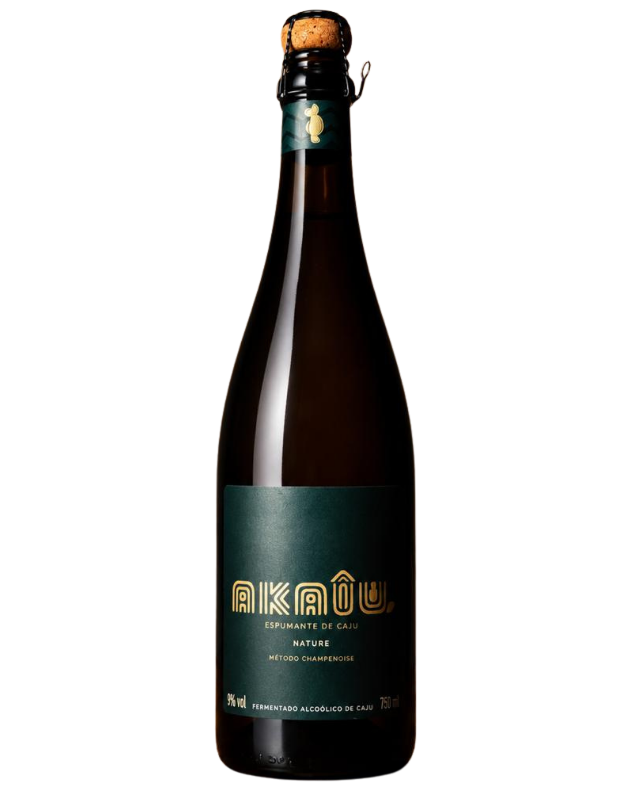
Brilhante e delicado, apresenta coloração amarelo-clara e perlage fina e abundante. Seus aromas remetem à cajuína artesanal, às compotas e aos doces de caju, traduzindo com elegância a identidade singular da fruta brasileira. Em boca, destaca-se pelo frescor, leveza e equilíbrio, sustentados por uma agradável mineralidade que persiste no retrogosto e prolonga a experiência sensorial.
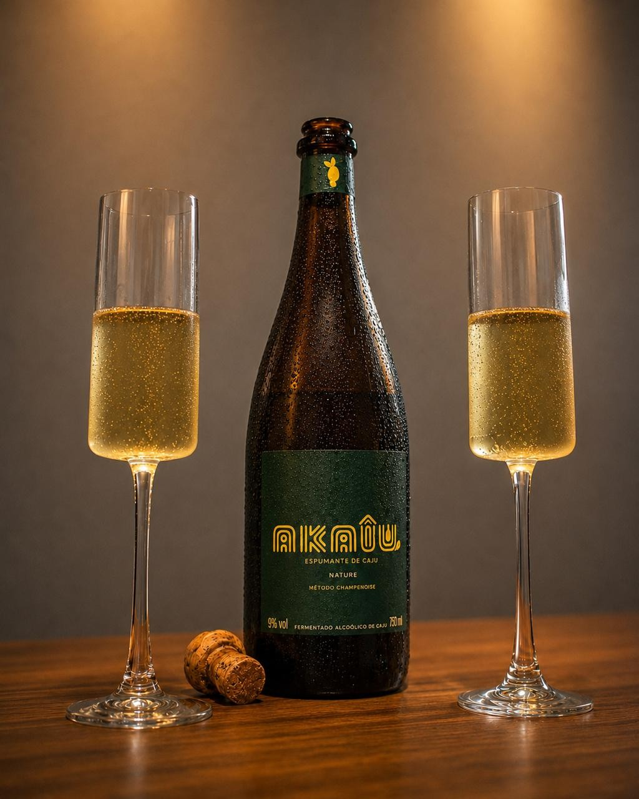
O AKAÎU é um convite para celebrar encontros, paisagens, sabores e histórias que merecem ser brindadas.
Cada garrafa de AKAÎU é resultado de uma sequência de decisões cuidadosas, desde a seleção dos pedúnculos até o dégorgement final. Um processo que valoriza a fruta, respeita o tempo e busca a excelência em cada detalhe.
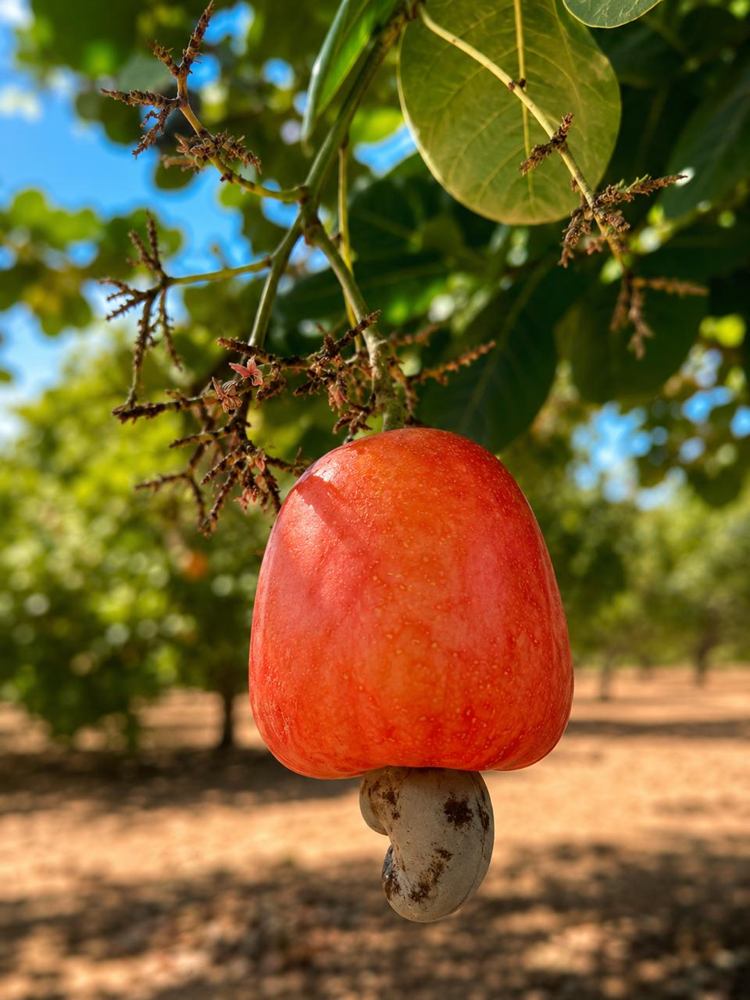
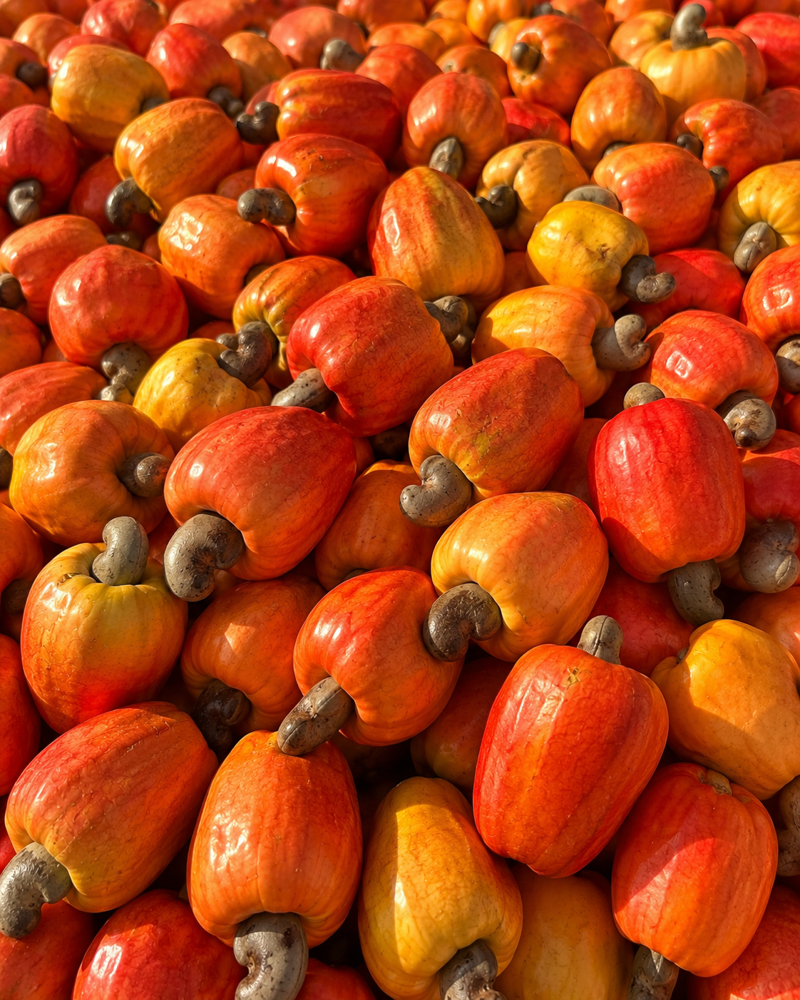
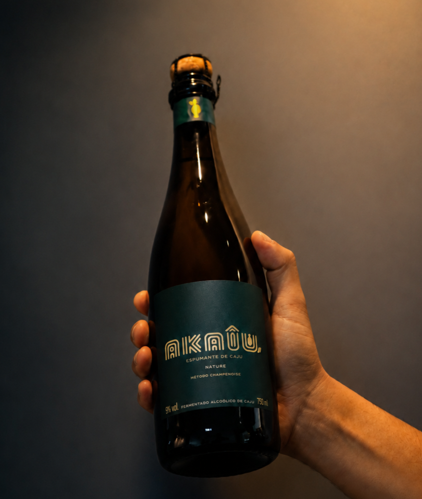
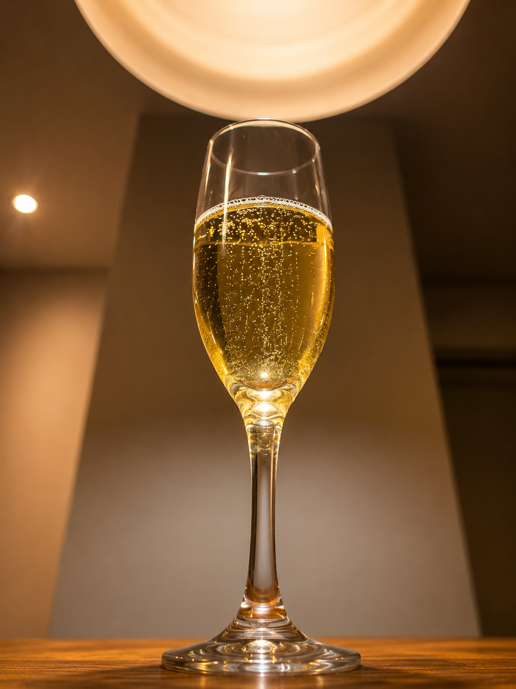
O AKAÎU nasceu para revelar um potencial que por muito tempo permaneceu invisível. Transformamos o caju, fruto nativo do semiárido brasileiro, em uma experiência capaz de gerar valor para o território, orgulho para suas origens e novas possibilidades para quem vive do seu cultivo.
Unimos ciência, tradição e sensibilidade para criar bebidas de excelência que respeitam a terra, valorizam as pessoas e demonstram que inovação e impacto positivo podem caminhar lado a lado.
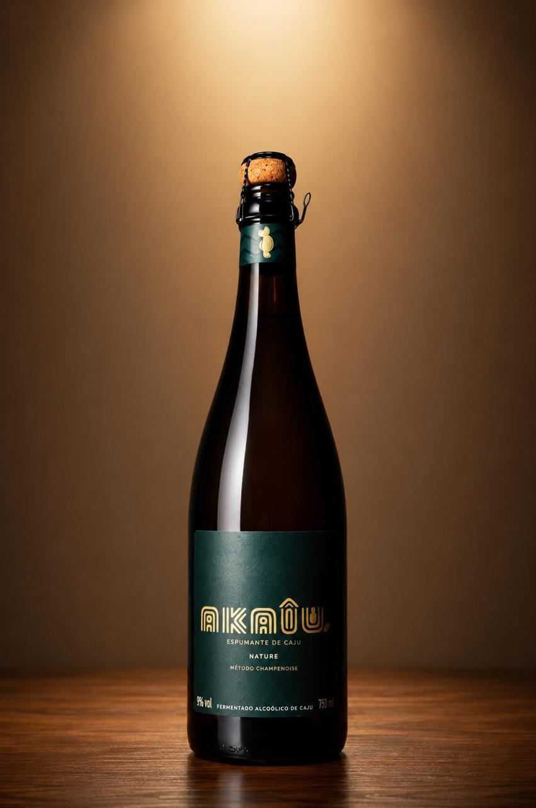
Através de microfermentações da YeastFarm e do minucioso método Champenoise, nós engarrafamos a resiliência do semiárido nordestino e a elevamos à categoria de arte de alto valor agregado.
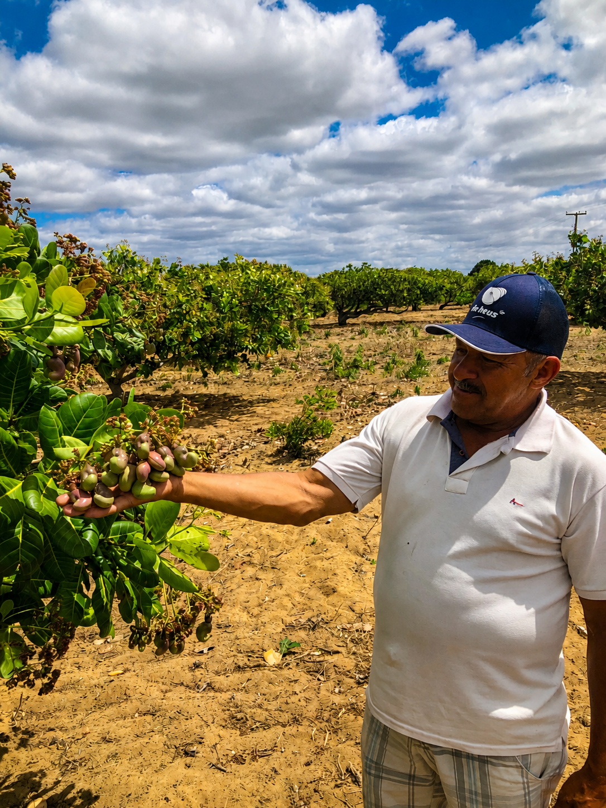
Valorizamos produtores, fortalecemos comunidades rurais, criando oportunidades a partir de uma cadeia produtiva mais justa e inclusiva.
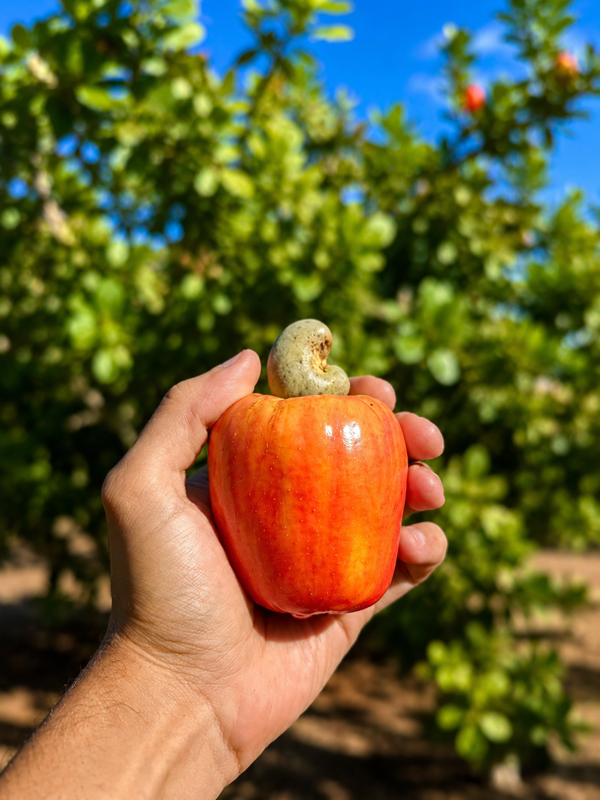
Transformamos um recurso historicamente desperdiçado em valor, reduzindo perdas e promovendo o aproveitamento integral do caju.
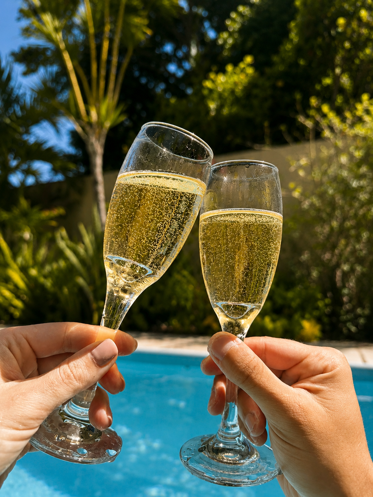
Colocar o Nordeste de forma definitiva no mapa mundial da enogastronomia, atraindo chefs e formadores de opinião.
Por trás de cada garrafa existe uma rede de parceiros que compartilha nossa visão de inovação, excelência e valorização da biodiversidade brasileira.
Seja para dúvidas, parcerias comerciais, distribuição ou eventos, nossa equipe está sempre à disposição para ouvir você.
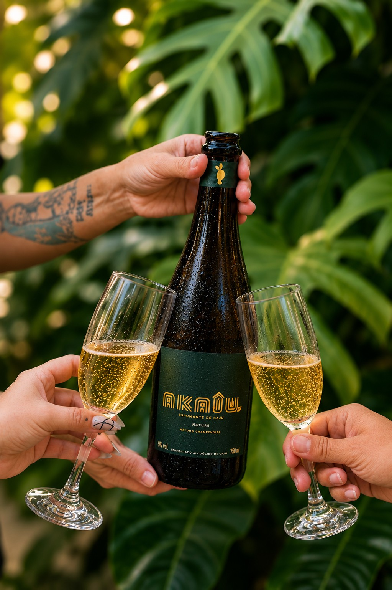